Welcome to the website of "Manthan - Indian Students' Association" at the University of Tennessee, Knoxville. As the name suggests, Manthan strives to promote the 'Amrit' of our cultural heritage, and to exchange ideas & views between the people of India and those of USA and other countries. We organize various cultural events around the year.
- Manthan Board
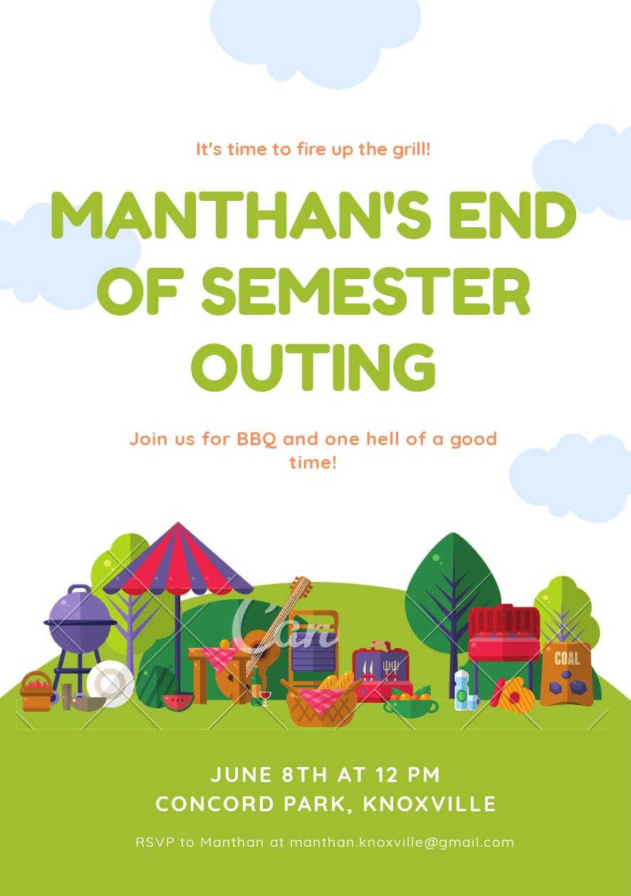
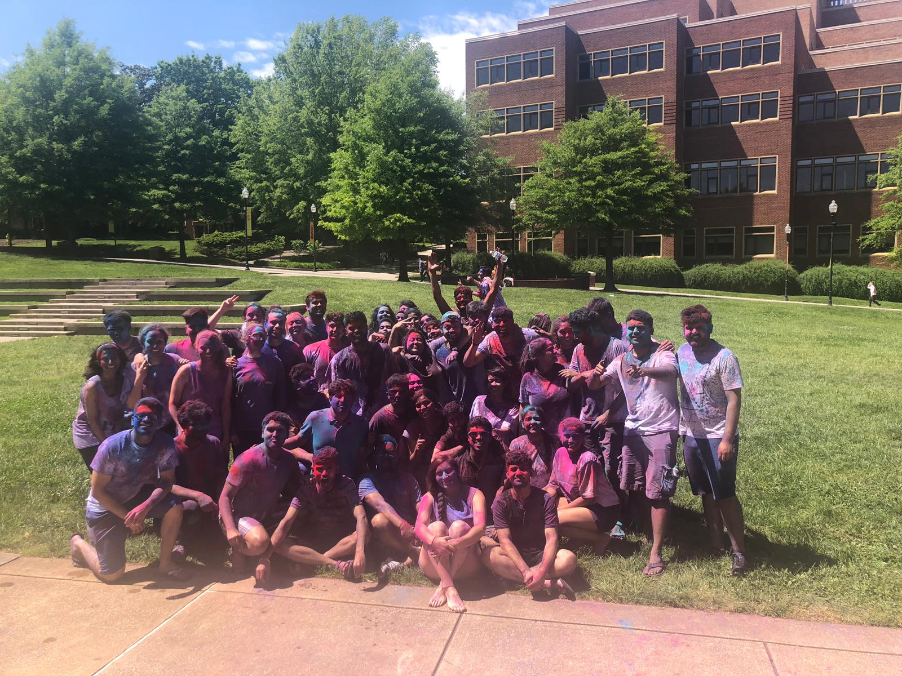
Holi is the festival of colors which is celebrated in almost every part of India. We played with colors and danced for hit bollywood songs while recharching ourselves with Indian snacks like samosa, jalabee and others. We had an average size of attandees who enjoyed the event and helped made it a success.
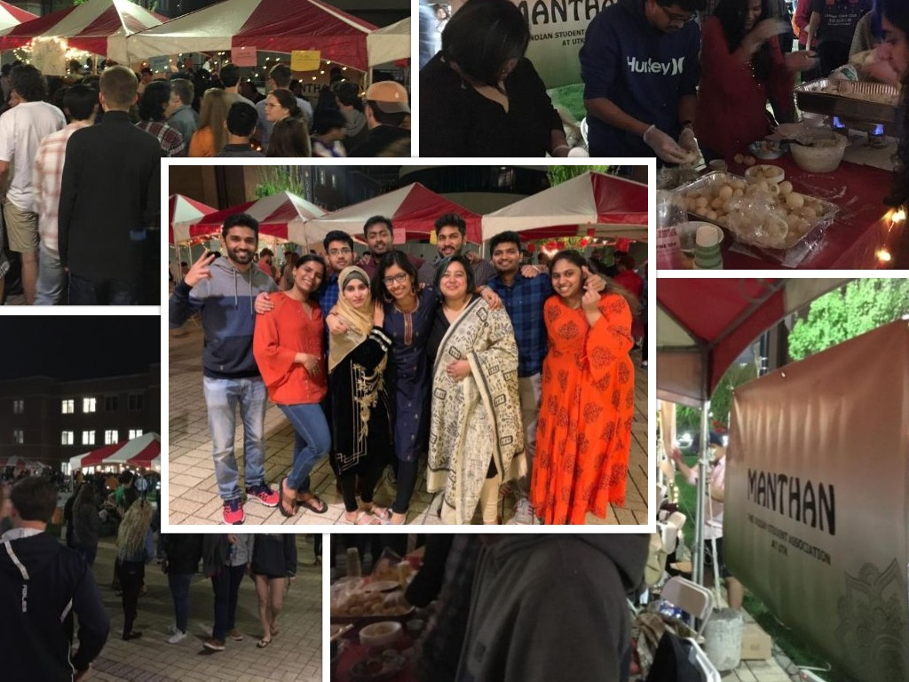
This event was organised by Asian American Assisiation of UTK. The event replicates the concept of Asian street foods in the night market. Several student organizations participate by setting up stalls to sell their respective countries famous street food. Mantan had a stall put up that sold pani puri and idlies with chutney to intorduce the audience to Indian culture and traditions.

This event is held by the I - House of UTK. Here each countries respective representative organisation presents the various cultural and historical aspects of the country. It is a 2 day event which includes 3 activites over a span of 2 days. First day, India's well know tea and snacks were distributed in the hodges library. In the evening at I - house, students were taught how to make pani puri. On the second day of the event, in the evening a power point of the various aspects of India was presented along with a demonstration of the bollywood dance. Attendees had alot of fun and we had the most number of attendees in this event.
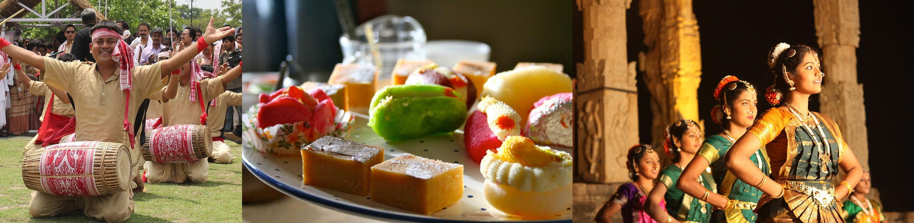
An exhibition featuring visual displays, interactive exhibits, free food and performances. Come experience the manifold cultures of India , and what connects us all as Indians. Event organized by the Indian Student Association at UTK. The event will promote cultural and social development of students by increasing cultural awareness, encouraging students to avoid the “danger of a single story”, question popular “blanket” assumptions about a country and culture, and seek different perspectives. As an older civilization that has been active in international trade from ancient times up until today, India has had a substantial influence on global history and culture and similarly, been influenced by other regions of the world. While we believe this event would have broad appeal, it would likely be of particular interest to students pursuing Global Studies, International Relations, Economics, Political science, History, and other art and social sciences fields. It would also serve as an opportunity to network with students from different cultures and learn about their experiences and of course taste some Indian snacks.
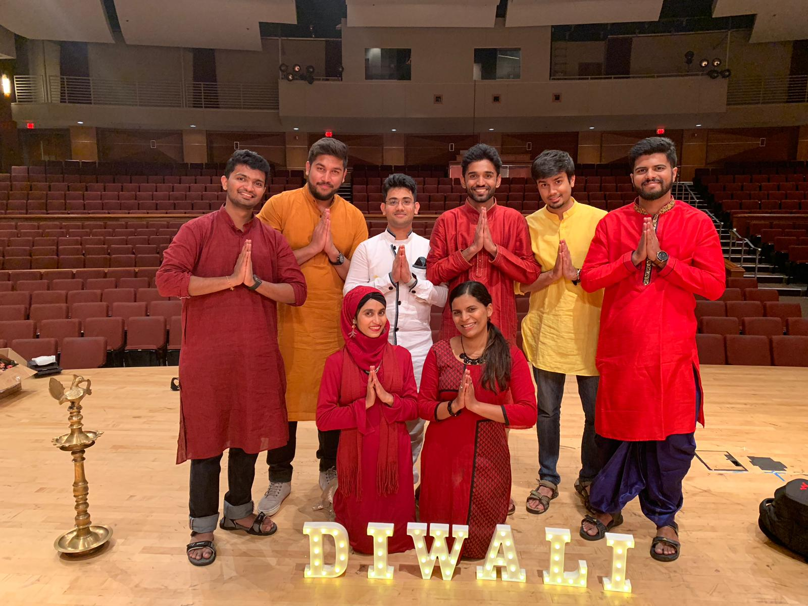
The festival of lights celebrating the victory of good over evil. Diwali at UT this year was a grand ceremony hosted by Manthan.The celebration was an august gathering, with who's who attending it. The participants, volunteers, members and the crowd alike had an enthusiasm that only seemed to be increasing all the while. There were traditional dances, songs, and the famous indian Shero-Shayari as well. The event was followed by a free dinner consisting of the authentic Indian delicacies, which were sovoured by all alike.

The Festival is the largest event hosted by the International House. Held each year outside on Pedestrian Walkway in the center of campus, this event brings together all of our international organizations who host booths with food and other artifacts representing their cultures. There are live performances all day long and it allows students to explore cultures from around the world without ever leaving campus!

The Knox Asia Fest in 2018 was a day to remember for the Manthan. As this event attracted a lot of crowd at the stall set up by the Manthan. There were a lot of activities being carried out in the stall. While someone was busy making Henna and beautiful designs someone else was busy with writing names of the audience in a regional Indian language. The stall was beautifully decorated with bandanas, dupattas and flowers of vibrant colours. The Henna was especially popular among the crowd, with it creating a huge queue of people, who were ready to wait just to get even simple henna designs
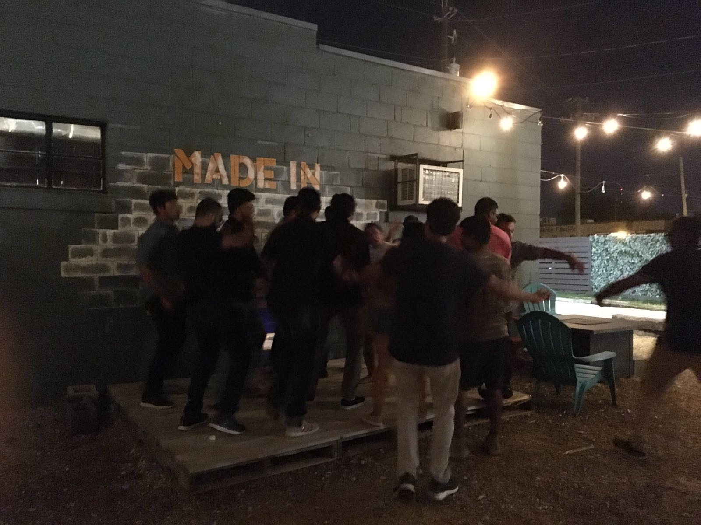
Oh the start of the semester and Manthan is all ready to host a party for the newly admitted Indian students, at UTK. The new students all bubbling with enthusiasm, to meet new people and a hope to find a home away from home. The event saw the old committee handing over their positions to the new members and everyone was in a great mood. There were a lot of "Hello!s" and "How are you?'s" followed by a great lipsmacking meal from the local Indian restaurant.
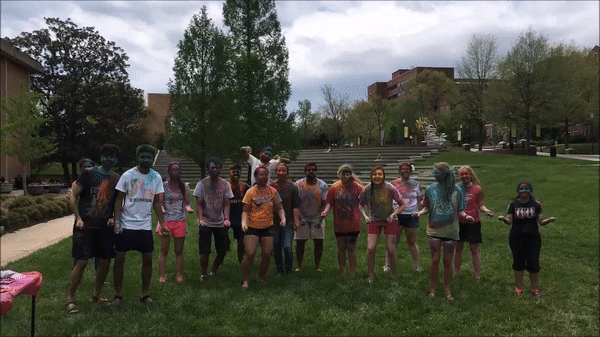
Holi is one of the most celebrated and recognised festivals of India which is celebrated in almost every part of India. It is considered as the 'festival of colours' and the 'festival of love'. As on this day people get together, forgetting all their resentments and bitterness towards each other, to play with colours. The vibrancy of colors is something that brings in a lot of positivity in our lives. This time, we even painted the rock!! As result, various nation citizens came along to enjoy the festival with us. It was a vibrant event!!
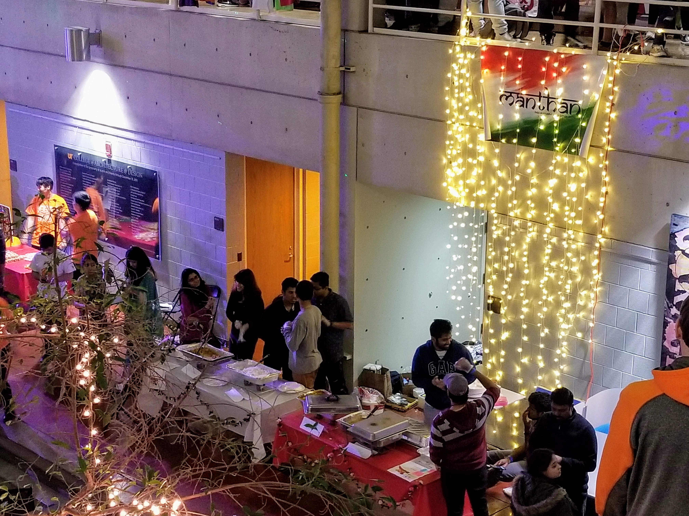
This event has several student organizations participating. There are stalls set up by students, showcasing the tradition, and culture of their own country. Mantan had a stall put up, with several games, cut outs, and some fun activities to intorduce the audience to Indian culture and traditions.
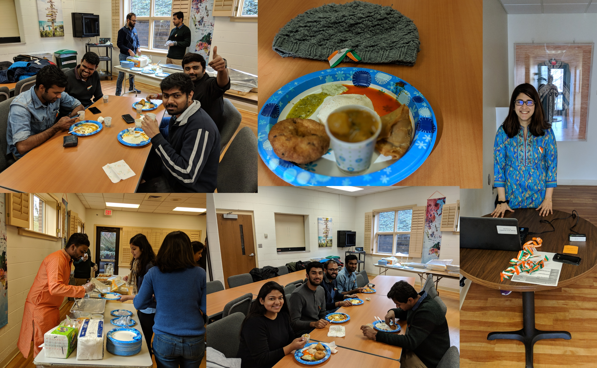
Republic Day honours the date on which the constitution of India came into effect on 26 January 1950 replacing the Government of India Act(1935) as the government document of India. At UTK we celebrated this day, with delicious Indian food and an formal get togather. Here we discussed about politics, bollywood, and other current affairs in India.
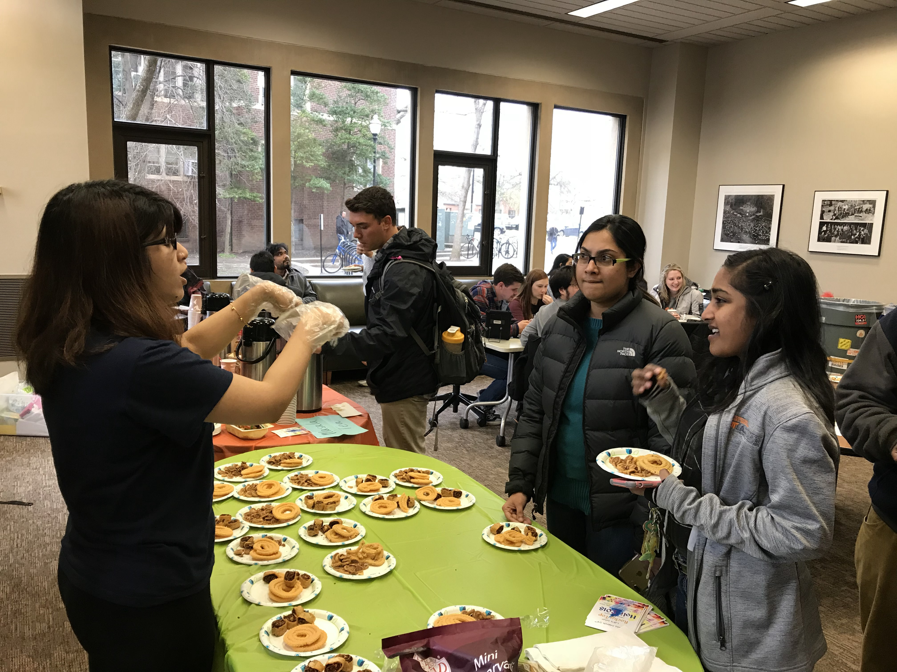
Each International Coffeehouse highlights a specific country by providing coffee or tea from that specific region of the world as well as a small taste of local food. The coffee house had a lot of active participation from all students, faculty and the staff alike, and saw a very diverse population and a forum to meet new people and make new friends.
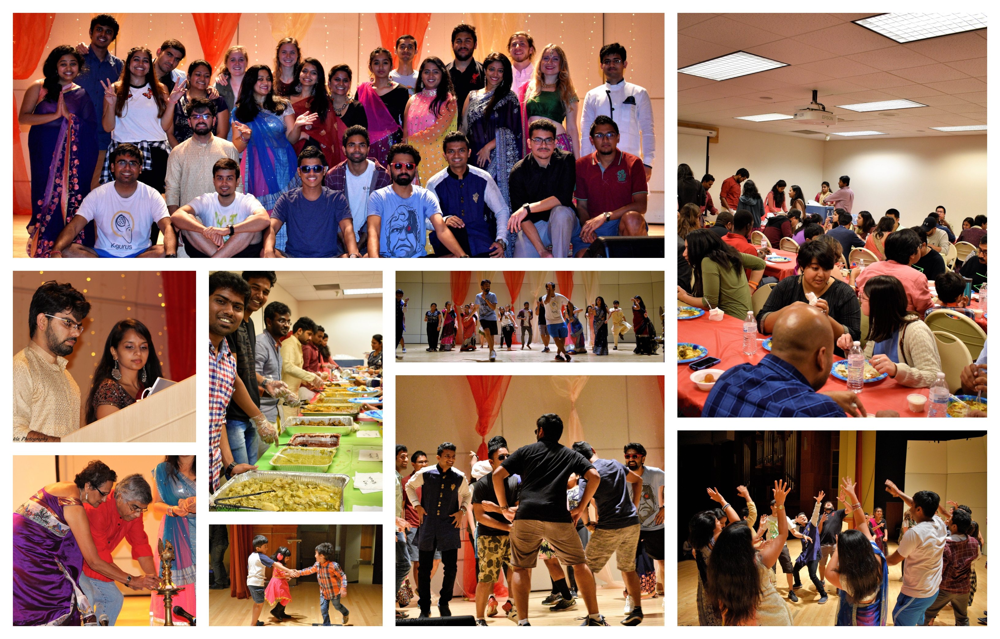
Diwali at UTK as usual was a grand celebration this year too. People were flodding into the hall to watch the spectacular dance performances, poems and songs by performers, some of whom had even travelled all the way from India to showcase their talent. This is one event, where no Indian at the campus dares to miss. Be it a student, a faculty or even a staff member. There are several families of Indian students who have settled here. Also, families who had nothing to do with the UT, joined in with a lot of furore. The entire crowd at the end of the program was roaring with a popular indian song. The event ended with a feast that included delicacies from the Nothern India
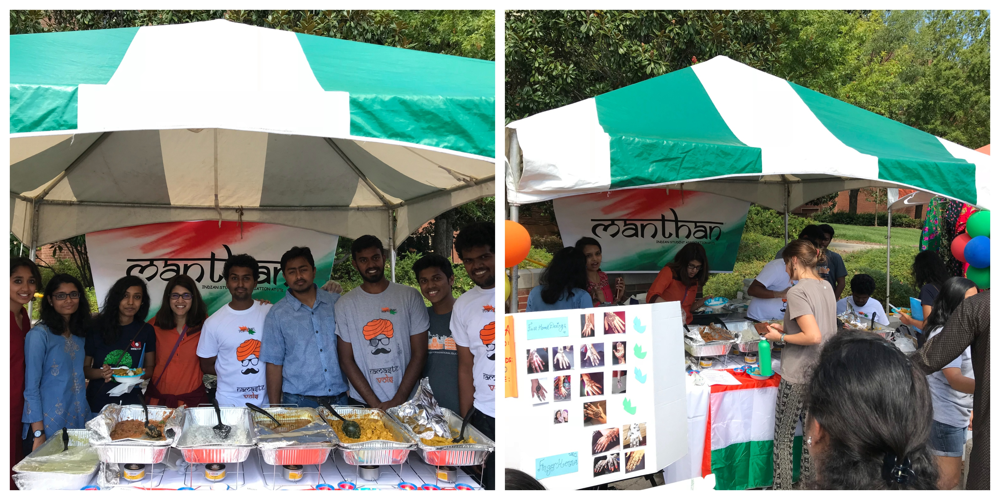
The International Fest is held by the I-House at UTK, in order to spread the knowledge about different cultures through student organizations. Manthan especially was a stall that attracted a lot of students. There were some delicacies from parts of India like Bengal, and Punjab, being sold, just to give the people a taste of what the authentic Indian food tastes like. The food was made by the Manthan members themselves, and it was mouthwatering as it was delicious to look at

An Asian Festival that features authentic traditional food vendors representing Asian countries such as Thailand, Indonesia, Laos, Malaysia, India, Burma, Korea, China, Japan, Philippines, and Vietnam. There are featured performances and art that includes traditional Chinese, Korean, Vietnamese, Thai, Indian, and Philippine dance. They also showcase various martial arts demonstrations, K-Pop and J-Pop performances, Chinese professional musicians, a bonsai exhibition, a cosplay contest, Japanese tea ceremony, and Japanese drummers from Disney World. Many of the artists travel to Knoxville from different US cities and from various Asian countries to participate in the Festival. 1,250 seats are available under the roof for the big stage performances